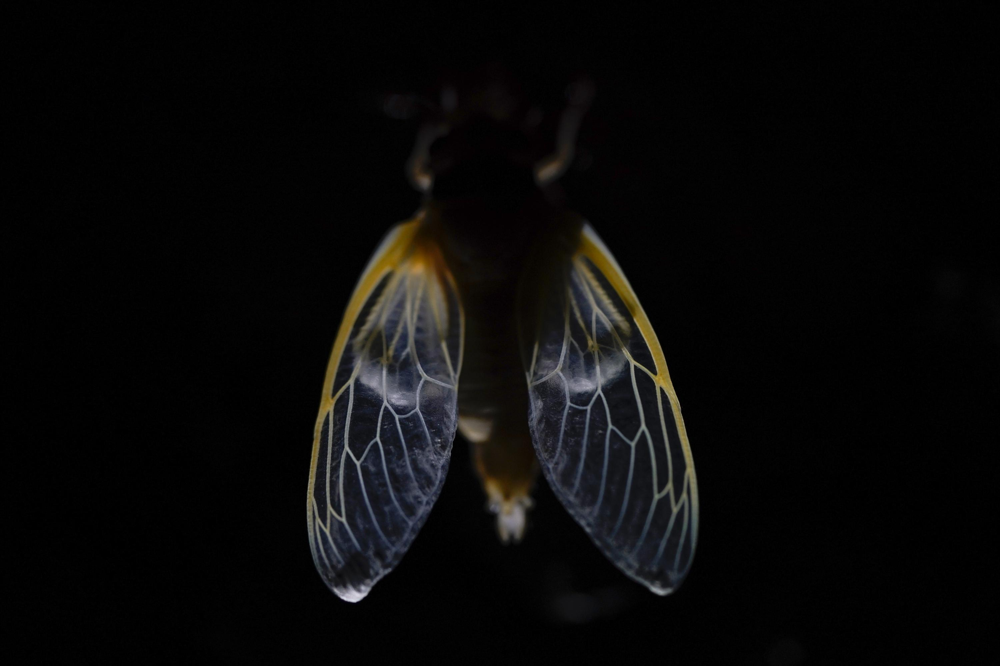
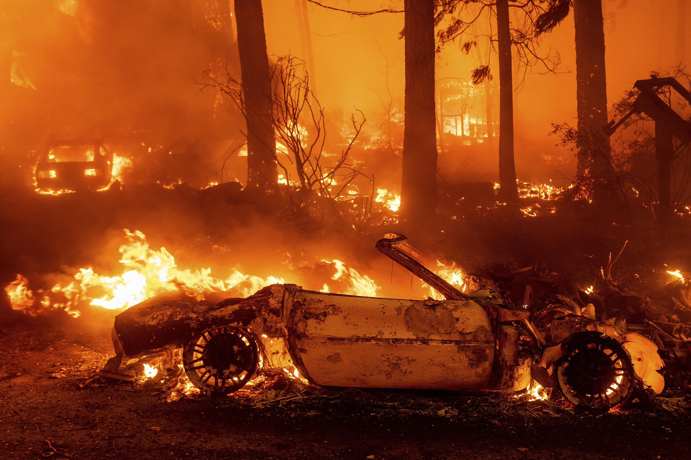
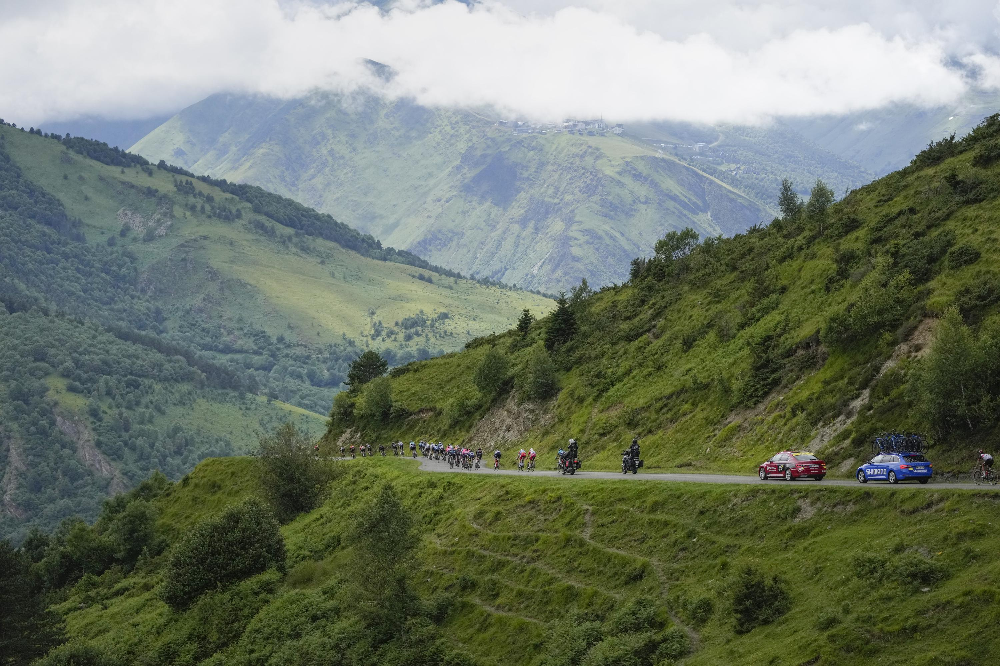
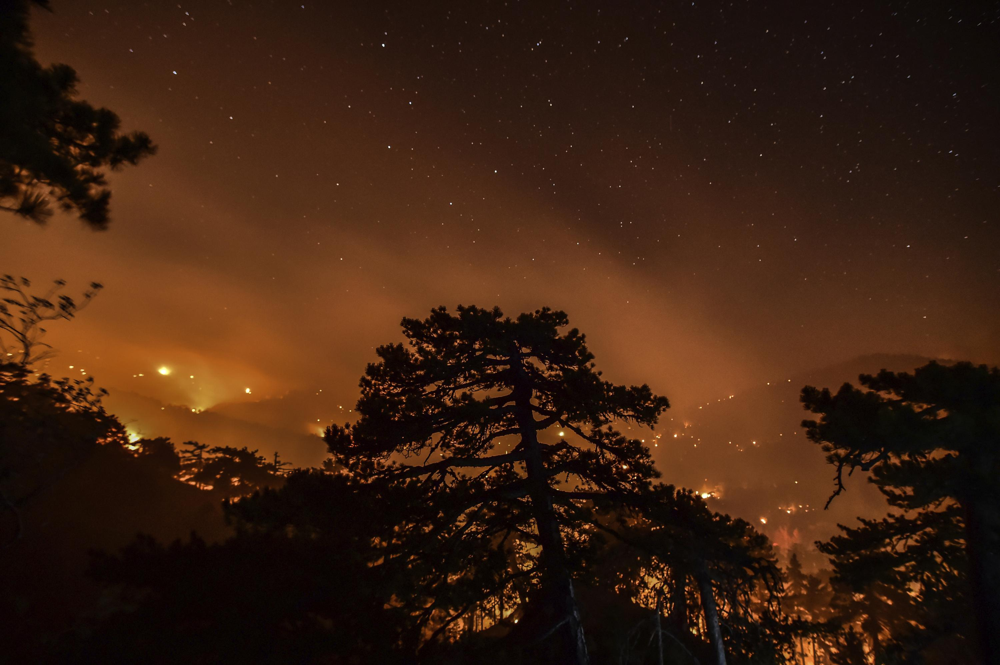
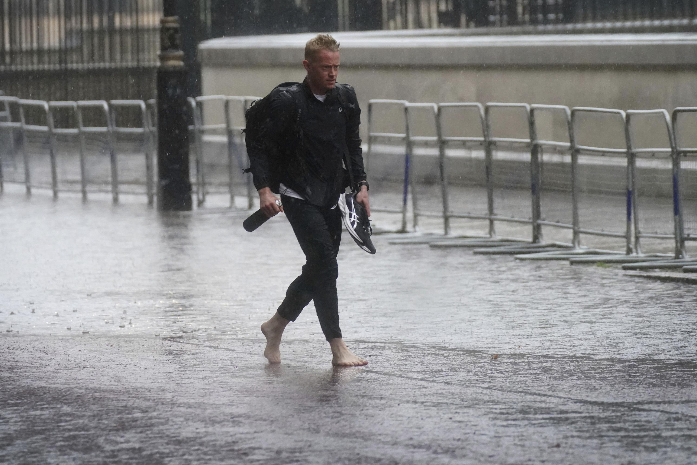
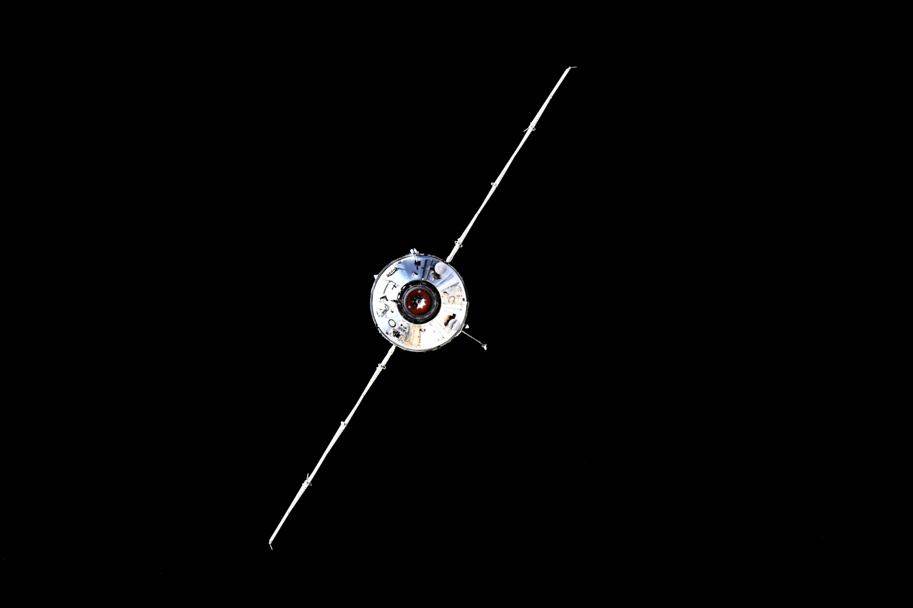
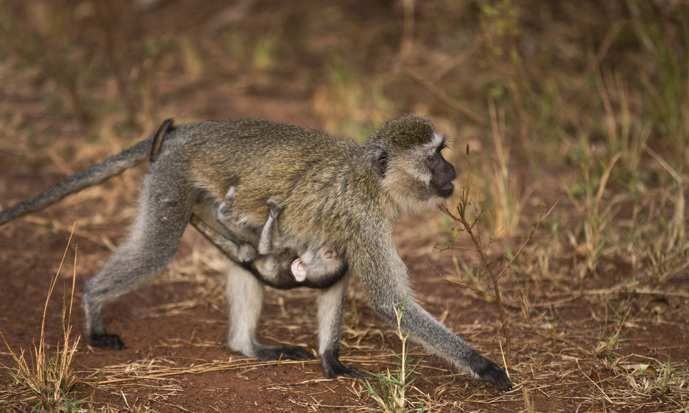

Content

(1) An adult cicada's wings are seen just after it shed its nymph shell, early Wednesday, May 5, 2021, on the University of Maryland campus in College Park, Md. (Carolyn Kaster)

(2) Flames consume vehicles as the Dixie Fire tears through the Indian Falls community in Plumas County, Calif., Saturday, July 24, 2021. The fire destroyed multiple residences in the area. (Noah Berger)
(3) Tiziana di Costanzo, co-founder of Horizon Insects, stirs flour for pizza dough before adding cricket powder, pictured in foreground, in her London kitchen on June 2, 2021. While insects are commonly eaten in parts of Asia and Africa, they're increasingly seen as a viable food source in the West as Earth’s growing population puts more pressure on global food production. Experts say they’re rich in protein, yet can be raised much more sustainably than beef or pork. Regulatory change has also made things easier for European companies looking to market insects directly to consumers. (Kelvin Chan)
(4) A staff member poses for photographers next to the wedding dress of Britain's Princess Diana during a media preview for the "Royal Style in the Making " exhibition at Kensington Palace in London, Wednesday, June 2, 2021. The exhibition, which opens to visitors on Thursday and runs until January 2, 2022, explores the intimate relationship between fashion designer and royal client. (Matt Dunham)
(5) Fireworks explode over New York Harbor and the Statue of Liberty as New York and other cities around New York state recognize a rate of 70% for single dose vaccinations against the COVID-19 virus, Tuesday, June 15, 2021 in New York. Celebration of the milestone was announced by Gov. Andrew Cuomo earlier in the day. (Craig Ruttle)

(6) The pack speeds down Col de Val Louron-Azet pass during the seventeenth stage of the Tour de France cycling race over 178.4 kilometers (110.9 miles) with start in Muret and finish in Saint-Lary-Soulan Col du Portet, France, Wednesday, July 14, 2021. (Daniel Cole)
(7) FILE - In this Thursday, July 22, 2021, file photo, Colorado Department of Transportation crews work to clear mud and debris from the eastbound deck of Interstate 70 through Glenwood Canyon, Colo., near Bair Ranch after a flash flood. Authorities say about 20 people spent the night inside a highway tunnel along I-70 in Glenwood Canyon after rain over an area burned by a wildfire once again triggered mudslides in Western Colorado. The people were caught in their vehicles Thursday night, July 29, 2021 and it took crews nine hours to carve out a path through the mud to reach them about 6:30 a.m. Friday. (Chelsea Self Glenwood Springs Post Independent, File)

(8) A new fire rages the forest in Senyayla village near near tourist resort of Marmaris, Mugla, Turkey, Saturday, Aug. 7, 2021. Turkey's wildfires have left little behind, turning green forests into ashen, barren hills. The destruction is intensely felt by Turkey's beekeepers, who have lost thousands of hives, the pine trees and the bugs their bees depend on, in a major blow to Turkey's honey industry. (Ismail Coskun IHA)
(9) Enrico Berre of Italy, left, and Oh Sanguk of South Korea compete in the men's Sabre team medal at the 2020 Summer Olympics, Wednesday, July 28, 2021, in Chiba, Japan. (Andrew Medichini)

(10) A man walks in bare feet through flood water in Horse Guards Road in central London, Sunday July 25, 2021. Thunderstorms bringing lightning and torrential rain to the south are set to continue until Monday it is forecast. (Victoria Jones PA)
(11) United States' Adeline Maria Gray, right, battles against Kyrgyzstan's Aiperi Medet Kyzy during the semi-final round of the women's 76kg freestyle wrestling match at the 2020 Summer Olympics, Sunday, Aug. 1, 2021 in Chiba, Japan. (Aaron Favila)

(12) In this photo taken by Russian cosmonaut Oleg Novitsky and provided by Roscosmos Space Agency Press Service, the Nauka module is seen prior to docking with the International Space Station on Thursday, July 29, 2021. The newly arrived Russian science lab briefly knocked the International Space Station out of position Thursday when it accidentally fired its thrusters. For 47 minutes, the space station lost control of its orientation when the firing occurred a few hours after docking, pushing the orbiting complex from its normal configuration. The station's position is key for getting power from solar panels and or communications. Communications with ground controllers also blipped out twice for a few minutes. (Roscosmos Space Agency Press Service photo)
(13) FILE - In this Sunday, Nov. 10, 2019 file photo, United States defender Alana Cook (29) passes the ball during the first half of an international friendly soccer match against Costa Rica, in Jacksonville, Fla. Cook joined an exclusive club when she nodded in a goal for Paris Saint-Germain against Barcelona on Sunday, April 25, 2021. Megan Rapinoe, Christen Press and Carli Lloyd are the only other American internationals to have scored at the semifinals or finals of the Women's Champions League. (John Raoux, File)

(14) FILE -- In this file photo taken Sunday, Sept. 6, 2015, a baby vervet monkey clings to its mother as she carries it by the side of the road in Akagera National Park, eastern Rwanda. The park was the best revenue generator for the wildlife conservation group African Parks in 2017, earning $1.6 million, or about three quarters of its operating cost, in one of Africa's smallest, safe countries. (Ben Curtis, File)
Posted on 2021-08-14 14:49:32